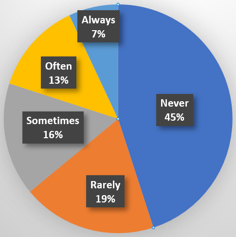
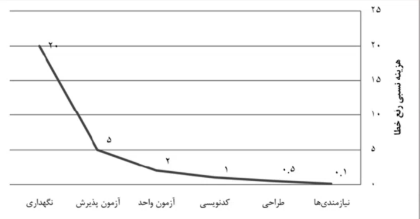

اهمیت شناسایی درست نیازمندیها
اگر نیازمندی را به درستی شناسایی نکنید، خوب انجام دادن بقیه پروژه، دیگر اهمتی نخواهد داشت.

درصد استفاده از ویژگیها در نرمافزارها
قاعده یک، صد، دویست

هزینه رفع خطا در هر مرحله از توسعه نرمافزار
بازگشت به صفحه اصلی